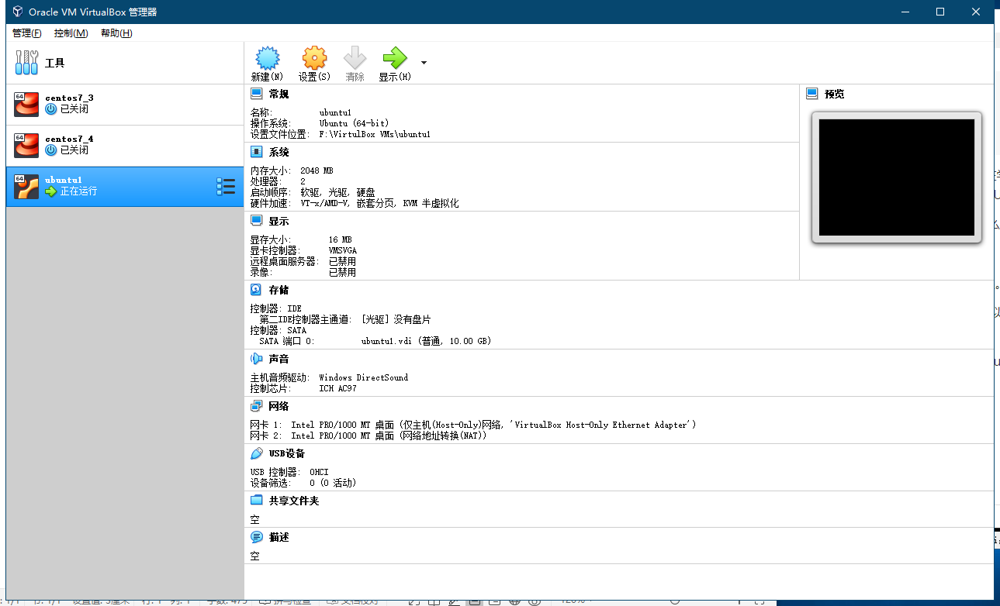

正文：
之前学习和使用的 linux 系统都是 centOS，在学习 docker 的时候，请教公司的大神，从大神口中得到一个总结：centOS 更适用于运维，UbuntuOS 更适用开发！
所以这次想体验一下 UbuntuOS，看看有什么不同之处！
直接下载 ubuntu18.04 版本（最新版）在虚拟机进行镜像安装。我选用的虚拟机是 Oracle VM virtualBox!
完成一系列的镜像安装操作后，启动我的 UnubtuOS！

安装初始化就是慢！！！
安装成功，发现登录进来不是最高权限！！！！！！Oh No！！！！
好吧！为了安全，第一次登录都是让用户先建一个用户……
那怎么办，我只好 su root 了………………
password：………………
我哪知道密码呀！！！！
原来 UbuntuOS 的 root 密码每次登录进来都会自动刷新，不是固定的，，裂了……
没办法，只能百度了。。。。：怎么修改 Ubuntu 的密码
点开第一个！！！！
既然默认 root 密码是随机的，即每次开机都有一个新的 root 密码。我们只需要修改默认的 root 密码就行！
我们先在终端输入命令 sudo passwd，然后再输入 root 用户的密码。
成功修改完密码，进入 root！哈哈哈哈！！！……
等一下，我为啥要进入 root，，，，原因是我**Xshell 连接不成功。。。
同样百度打开：ubuntu 无法连接 xshell
原来是 Ubuntu 主机没有开启 ssh 服务，需要开启 openssh-server
1 | root@ubuntu:~# sudo apt-get install openssh-server |
使用
1 | root@ubuntu:~# ps -e | grep ssh |
如果只有 ssh-agent 表示还没启动，需要
1 | root@ubuntu:~# /etc/init.d/ssh start |
如果显示 sshd 则说明已启动成功。
太棒了！感觉学到了许多！。。。。。
嘿嘿！
鸣谢：
ps：
Ubuntu 有一个非常方便的创建文本的命令
tee 文件 <<-’EOF’
//要粘贴进来的文本信息
EOF
完成文本信息文件创建，简化了创建到编辑再保存的步骤